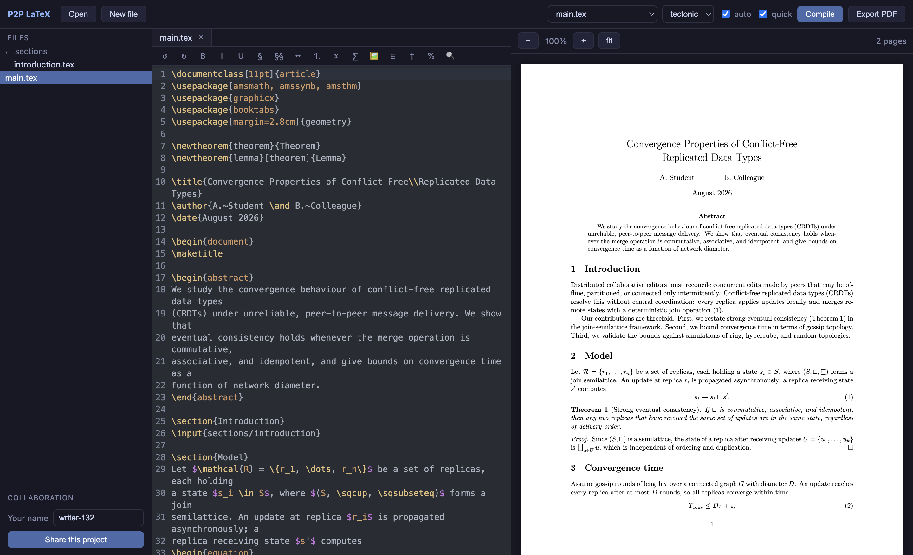

A free, open-source alternative to Overleaf. Real-time collaboration over encrypted peer-to-peer connections — no account, no subscription, no upload. Your thesis lives in a normal folder on your own disk.
free forever · open source (MIT) · macOS, Windows & Linux
Bring your own TeX: install
Tectonic (brew install tectonic)
or TeX Live / MacTeX, and the app finds it automatically.
macOS builds are not yet notarized: the first time, right-click the app and choose Open.

Live cursors and conflict-free merging of simultaneous edits (CRDTs). Send one invite key and you're writing together — each person compiles locally.
Peers connect directly with end-to-end encryption. No relay server ever sees your writing; there is no company in the middle, because there is no middle.
Auto-compiles rebuild only the chapters you just edited: our 1,863-page stress-test thesis takes 38 s to build in full, but 4.6 s after a chapter edit. The PDF viewer renders only visible pages, so it opens instantly.
The preview recompiles as you write. ⌘-click a source line to flash its spot in the PDF; ⌘-click the PDF to jump back to the exact line.
\cite{ completes from your .bib files, \ref{ from every
label in the project. A formatting toolbar shows the LaTeX behind every button,
so it doubles as a tutor.
Sessions persist on disk. Edit on the train, reconnect later, and offline changes merge back in cleanly.
P2P LaTeX is free and MIT-licensed, and will stay that way. If it saved your thesis (or your wallet), you can star it on GitHub, report bugs and ideas in the issue tracker, or buy me a coffee. ☕